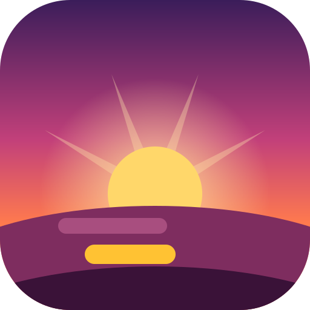
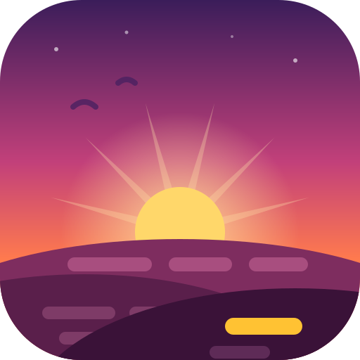
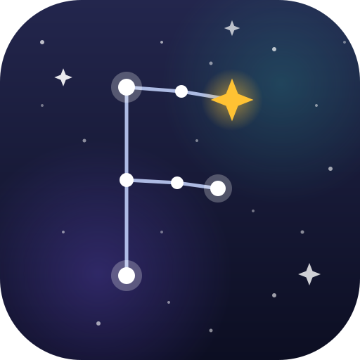
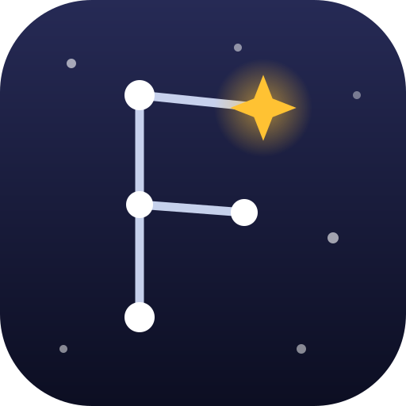
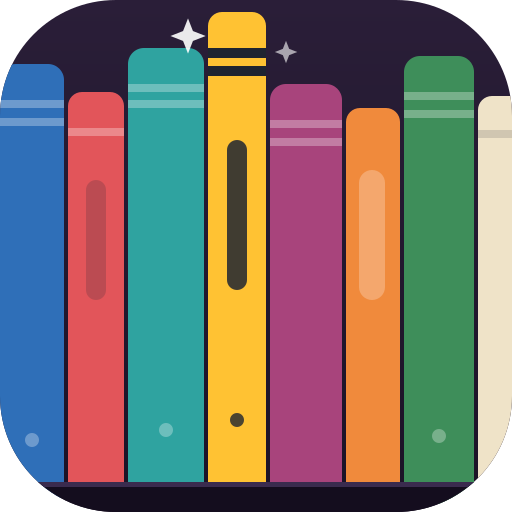
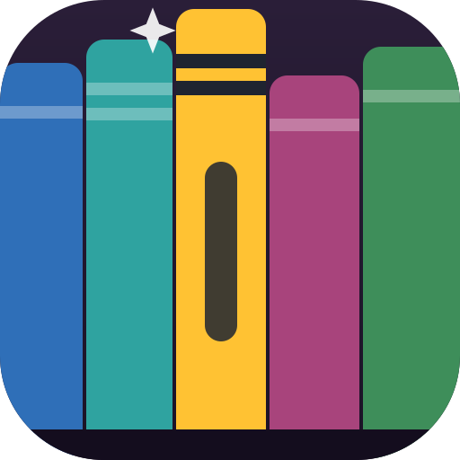

The opposite bet from concepts v2: full-bleed illustrated tiles that use the whole canvas — layered scenes, gradients, incidental detail. Small variants keep the scene and shed only the fine grain. Amber stays as the recurring “the word you're learning” accent.
Rolling hills made of lines of text under a rising sun — content stretching to the horizon, one word glowing amber on the nearest hill. The sunset palette from the earlier rounds, turned into an actual sunset.


A night sky full of stars where a handful are connected into an F-shaped constellation, the brightest one amber. Collecting words one by one until they form something — the SRS story without a single flashcard in sight.


A full shelf of colorful spines — all the content you could study — with one amber volume pulled out and sparking. Detail-rich but built from vertical stripes, so it degrades gracefully: at 16 px it's still a colorful shelf with a yellow pop.


The asterisk from concept B, exploded: radial sunset gradient, echo rings, arm trails and confetti of dots, sparks, and word-fragments. The moment a word clicks. Keeps B's favicon strength while filling every pixel at large sizes.
The word you see is the amber pill above the surface; the meaning, grammar, and connections are the iceberg below — with faint text lines and one amber gem frozen inside. The most story-driven of the set: every deep-dive card is an iceberg.